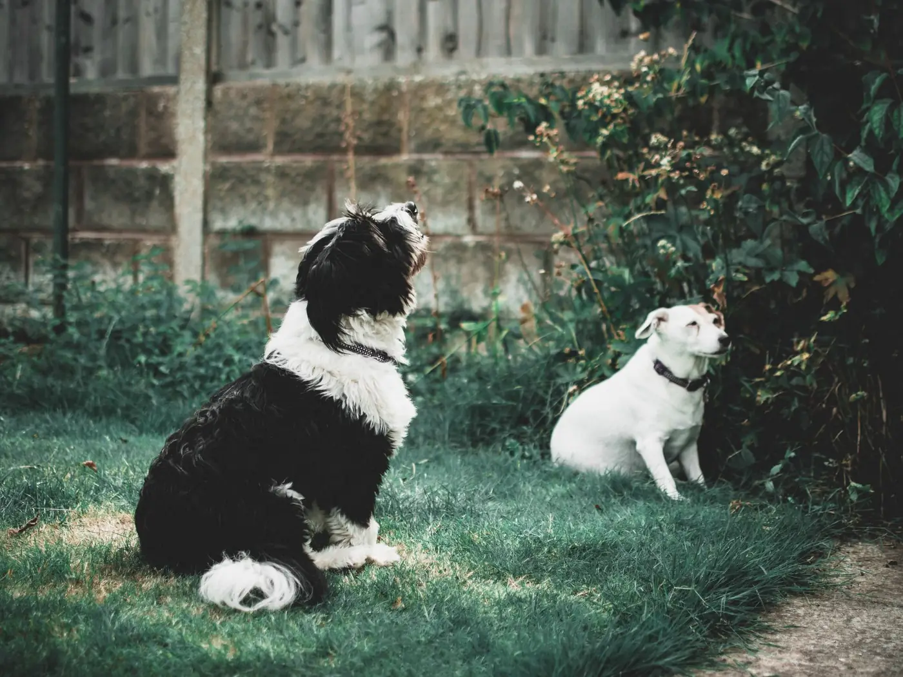

Fake grass doesn’t drain
the way you think
Real turf takes urine away into the soil. Artificial grass does not — it sits in the fibres and the backing. That is why a fake lawn can look spotless and still turn your garden unusable in July.
Picking it up is only half the job
On artificial grass, the solid waste is the easy part. The problem is everything that soaks in: urine works into the pile and sits on the membrane underneath, where it has nowhere to go and nothing to break it down.
Left alone through a warm spell it becomes exactly the smell people describe as "the garden turning". Rinsing alone spreads it about. It needs treating.
- Rinsed through the pile, not just picked over
- Treated with pet-safe Bugalugs products, safe for dogs and children once dry
- Neutralises the smell rather than covering it with perfume
- From £5 a visit as an add-on to any regular clear
- Available on one-off clears too, if you just want a reset
- Worth doing monthly from May through September

When it matters most
Warm weather
Heat is what turns a fine-looking lawn into a smell you notice from the back door. May to September is when this earns its money.
Small enclosed gardens
Courtyards and walled gardens with no airflow concentrate it. The smaller the space, the more obvious it gets.
Multiple dogs
More dogs, same square metres. Artificial grass has a limit to what it will take before it needs treating rather than rinsing.
About artificial grass
No. The products are made for use around pets and are applied at the dilution the manufacturer specifies. Artificial grass is more robust than real turf here — it is the backing and the smell we are treating, not the blades.
Yes, once dry. We use pet-safe Bugalugs products precisely because the whole point is a garden the dog goes back out into. We will tell you how long to keep them off, which is usually not long.
Monthly through the summer for most gardens, less in winter. If you can smell it, it needed doing a fortnight ago.
Yes. Most people add it to a regular visit, but we will do it as a standalone job if you scoop yourself and just want the smell dealt with.
The sanitising treatment does, and it is included as standard on every visit. Real lawns rarely need the full rinse though, because the soil does that job for you.
Get your summer garden back
Add artificial grass treatment to any quote, or book it as a one-off if you just need a reset.